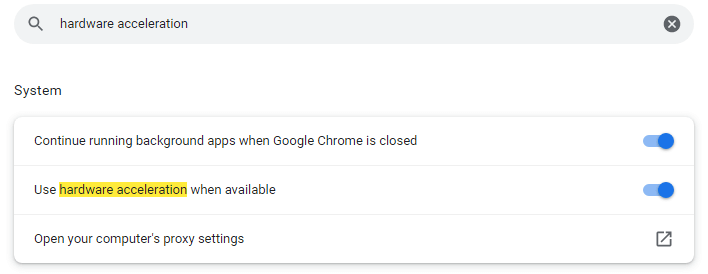
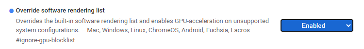
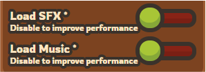
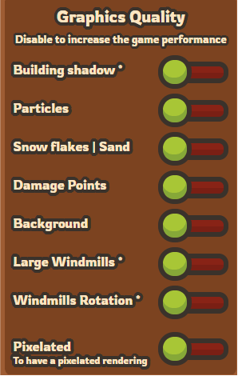
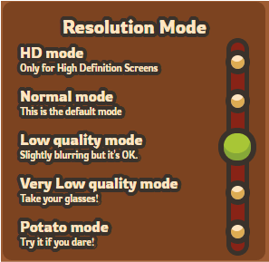

HOW TO REDUCE LAGS
USE GOOGLE CHROME
- We strongly recommend using Google Chrome as your browser, and keeping it up to date.
- You can download Google Chrome, or update it
- If you still want to use firefox, you may enter about:config, set gfx.canvas.accelerated to true, and then restart your browser.
HARDWARE ACCELERATION
- Be sure your Hardware Acceleration is activated
- To do so, click on the 3 points on the top right of your screen.
- Go to Settings, then Advanced Settings, and then System.
- • Activate Hardware Acceleration.
- • Or, in the search bar, type "Hardware Acceleration" in the language of your browser.
- The option will appear in System

OVERRIDE SOFTWARE RENDERING LIST
- You can also enable the option Override Software Rendering List
- To do so, type chrome://flags/ into your search bar

- Then enable Override software rendering list

DO NOT RUN OTHER APPLICATIONS WHILE PLAYING
GOOD WINDOW CONFIGURATION
INCREASE GAME PERFORMANCE
- Taming.io offers many options to reduce lags.
- Go on Settings to see them.
MUSIC AND SFX
- Muting the sound does not prevent music or sfx from being downloaded into the game.
- Disable the loading of the Music and the SFX to reduce lags

GRAPHICS QUALITY
- The more images you display, the more your game may lag.
- Disable the Building Shadow, the Particles, the Snow Flakes | Sand, the Damage Points, the Background, the Large Windmills, the Windmills Rotation.

RESOLUTION MODE
- Change the Resolution Mode to reduce lags
- The default mode is Normal mode. Be sure to not play on HD mode. You can lower it to Low quality mode, Very Low quality mode or Potato mode, to reduce the lags
